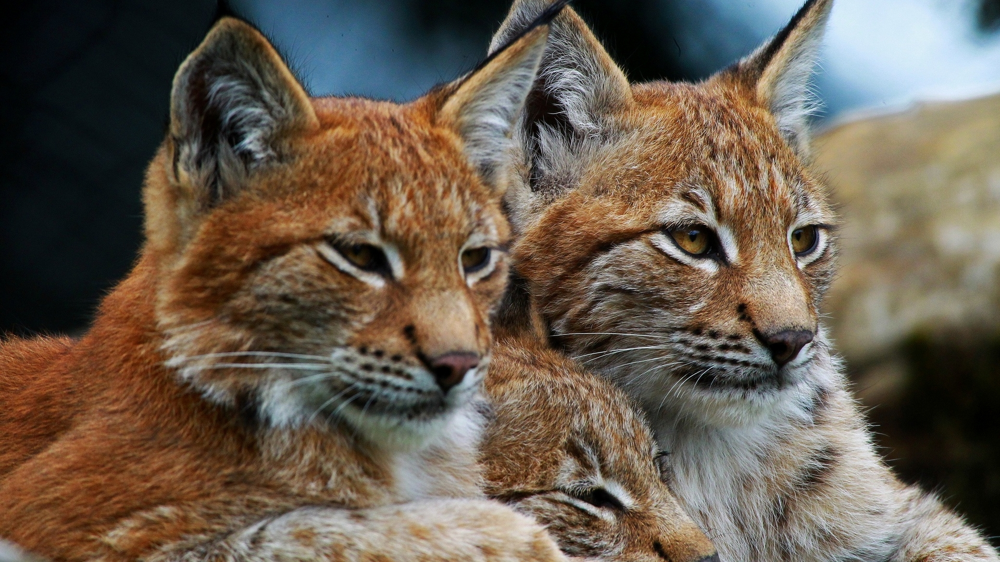

Um dos felinos mais admirados pela sua beleza exótica
e principalmente pelos seu olhos que reluzem no escuro.
É um animal de comportamento solitário e hábitos geralmente noturnos. Por ser um caçador que usa táticas de espreita, o lince é bastante silencioso ao caminhar, dificultando ainda mais sua visualização em ambientes naturais. Em algumas comunidades dos Bálcãs, uma região do sudeste europeu formada por países como Bósnia, Bulgária, Sérvia e Grécia, os linces são considerados “fantasmas”, pelo fato de raramente serem vistos.
A maioria da suas presas é composta por animais de pequeno porte como roedores, lebres, coelhos e aves. No entanto podem capturar filhotes e espécimes jovens de alces, de javalis e de ibex (uma espécie de cabra montesa).
Força / Surpresa
É o maior dos linces, podendo alcançar até 30kg de massa corporal. A coloração da pelagem varia muito, com indivíduos vermelho-amarronzados, acinzentados e amarelados.